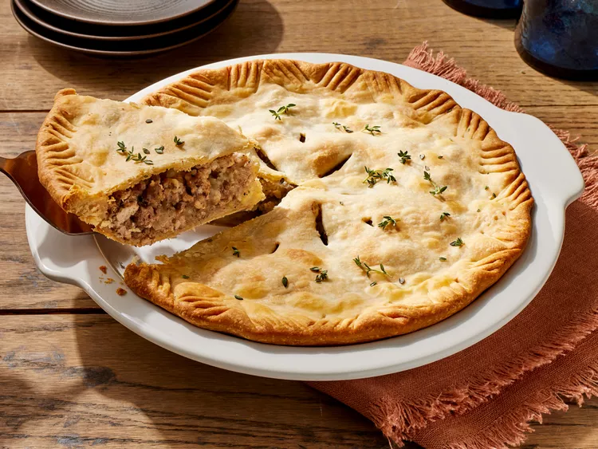

Meat pie

Ingredients
- Meat: The "meat" in this meat pie is a combination of ground beef and ground pork.
- Vegetables: You'll need a potato and an onion.
- Spices and seasonings: This hearty meat pie is flavored with garlic, mustard powder, dried thyme, dried
sage, ground cloves, salt, and pepper.
- Water: Add ¼ cup of water to the ground meat mixture as it cooks.
- Pie crust: Use a store-bought or homemade double pastry crust.
Steps
- Boil and mash the potatoes.
- Cook the meat with the water, onion, garlic, and seasonings.
- Mix in the potatoes, then fill the pie crust. Cover with the top crust.
- Bake until the crust is browned.
Home